ACTIVITY MONITOR DATA (Updated 20211026)
knitr::opts_chunk$set(echo = FALSE)#DATA SETUP
Load packages and import data
## ── Attaching packages ─────────────────────────────────────── tidyverse 1.3.1 ──## ✓ ggplot2 3.3.5 ✓ purrr 0.3.4
## ✓ tibble 3.1.4 ✓ dplyr 1.0.7
## ✓ tidyr 1.1.3 ✓ stringr 1.4.0
## ✓ readr 2.0.1 ✓ forcats 0.5.1## ── Conflicts ────────────────────────────────────────── tidyverse_conflicts() ──
## x dplyr::filter() masks stats::filter()
## x dplyr::lag() masks stats::lag()##
## Attaching package: 'lubridate'## The following object is masked from 'package:clock':
##
## as_date## The following objects are masked from 'package:base':
##
## date, intersect, setdiff, union##
## Attaching package: 'hms'## The following object is masked from 'package:lubridate':
##
## hmsRemoving dates where collar is off
Rename columns
Delete sleeping hours (10pm-8am)
Adding DOB, weeks old, rearing (home vs DPK), & sex columns
Make hour column
Make combined column for date and time
Create 5 minute intervals labels
For each puppy, find an average of activity for each 5 minute interval (make one mean activity count for each interval)
## `summarise()` has grouped output by 'intervaltime', 'weeksold', 'name', 'rearing'. You can override using the `.groups` argument.## `summarise()` has grouped output by 'intervaltime', 'Date', 'weeksold', 'name', 'rearing'. You can override using the `.groups` argument.Deviance from weekly means (for each puppy) for each (5 min interval) data point (creates indiv_weekly_dev df)
## `summarise()` has grouped output by 'name'. You can override using the `.groups` argument.Find an average of activity for each week for each 5 minute interval (make one mean activity count for each interval) (not by puppy, for the entire group)
## `summarise()` has grouped output by 'intervaltime'. You can override using the `.groups` argument.| #PLOTTING ACTIVITY Setup |
|---|
| Store weeks old as a factor |
| List of desired hourly time breaks for graph x axis tick marks |
| #MEAN DEVIANCE GRAPHS |
INDIVIDUAL GRAPHS FOR 1 INDIVIDUAL PUPPY FOR 1 INDIVIDUAL WEEK GRAPH OF MEAN DEVIANCE (GROUPED BY PUPPY) FOR 1 SPECIFIC WEEK  COMPARE TWO PUPPIES’ MEAN DEVIANCE FOR 1 SPECIFIC WEEK
COMPARE TWO PUPPIES’ MEAN DEVIANCE FOR 1 SPECIFIC WEEK  GROUP AVG FOR 1 INDIVIDUAL WEEK GRAPHS OF ALL WEEKS OVERLAID (USING ENTIRE GROUP MEAN DEVIANCE)
GROUP AVG FOR 1 INDIVIDUAL WEEK GRAPHS OF ALL WEEKS OVERLAID (USING ENTIRE GROUP MEAN DEVIANCE)  GRAPHS OF ALL WEEKS FOR 1 INDIVIDUAL PUPPY
GRAPHS OF ALL WEEKS FOR 1 INDIVIDUAL PUPPY 
GRAPHS OF GROUP DEVIANCE: 8 VS 20 WEEKS  GRAPHS OF GROUP DEVIANCE: 8, 14, & 20 WEEKS 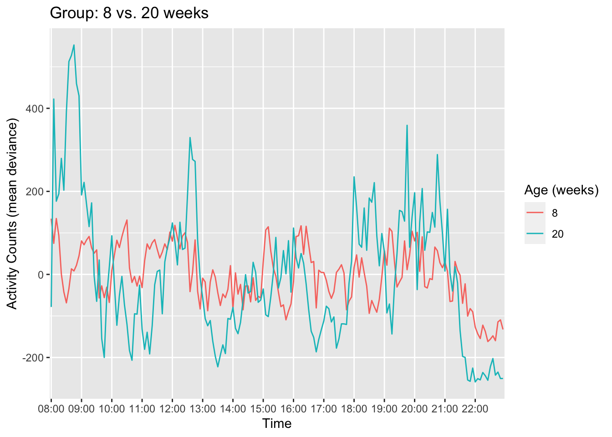
GRAPHS OF GROUP DEVIANCE: 8, 14, & 20 WEEKS 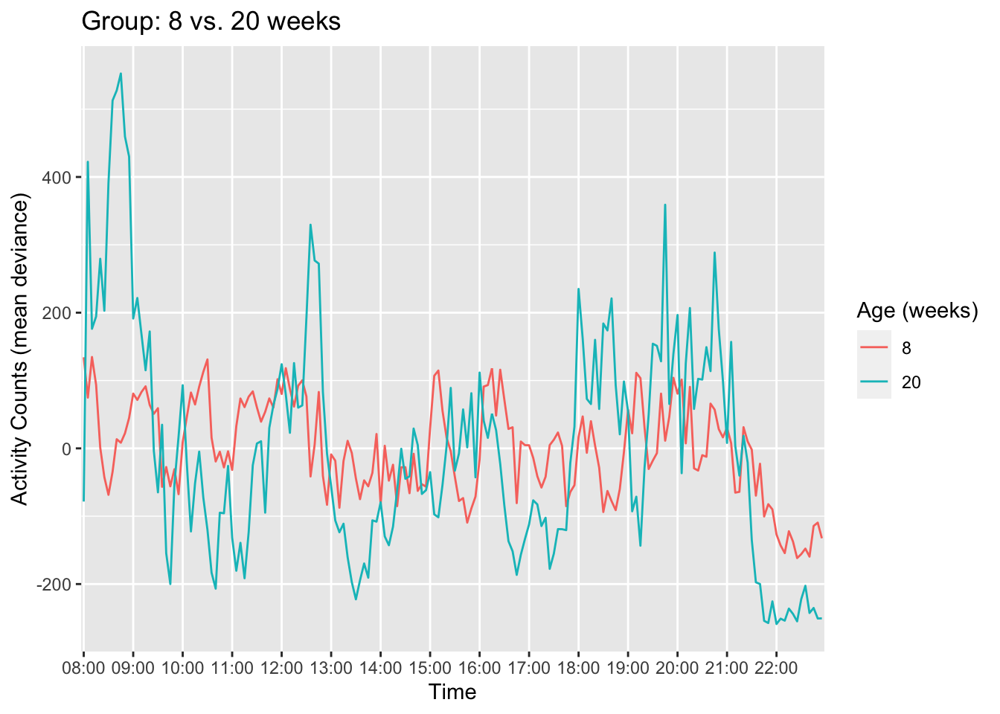
#MEAN ACTIVITY COUNT GRAPHS (raw mean activity, not deviance)
INDIVIDUAL GRAPH OF RAW (MEAN) ACTIVITY COUNTS FOR 1 INDIVIDUAL PUPPY FOR 1 INDIVIDUAL WEEK  GRAPH OF RAW (MEAN) ACTIVITY COUNTS GROUPED BY PUPPY) FOR 1 SPECIFIC WEEK
GRAPH OF RAW (MEAN) ACTIVITY COUNTS GROUPED BY PUPPY) FOR 1 SPECIFIC WEEK  COMPARE TWO PUPPIES’ RAW MEAN ACTIVITY COUNTS FOR 1 SPECIFIC WEEK GROUP AVG OF RAW (MEAN) ACTIVITY COUNTS FOR 1 INDIVIDUAL WEEK 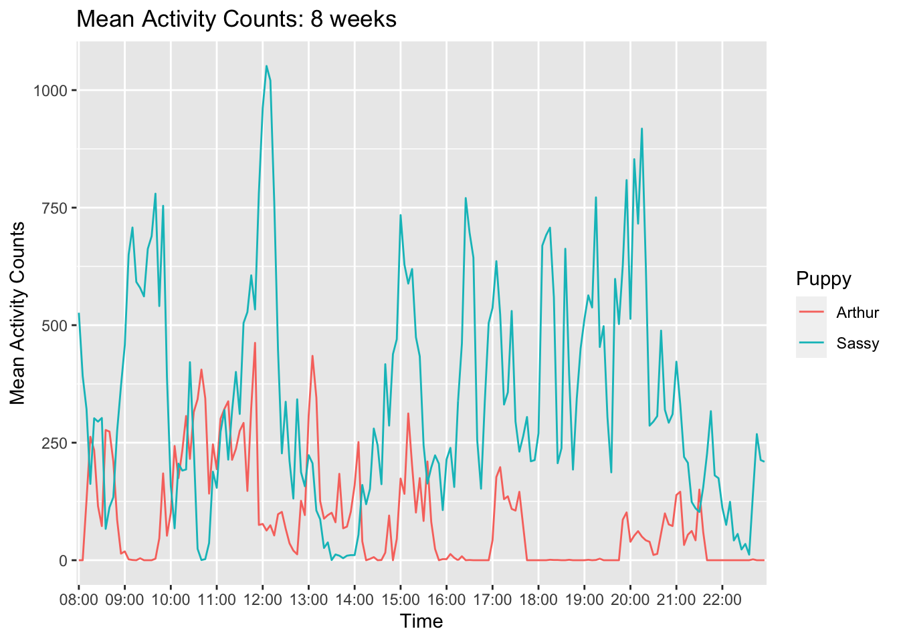 GRAPHS OF ALL WEEKS OVERLAID (USING ENTIRE GROUP RAW MEAN ACTIVITY COUNTS) GRAPHS OF GROUP: 8 VS 20 WEEKS (RAW MEAN ACTIVITY COUNTS) 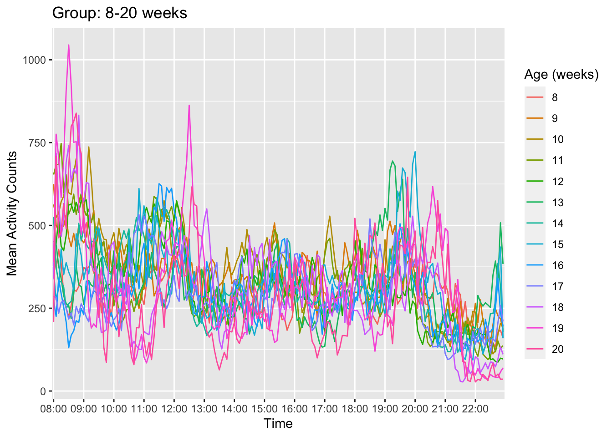 GRAPHS OF GROUP: 8, 14, & 20 WEEKS 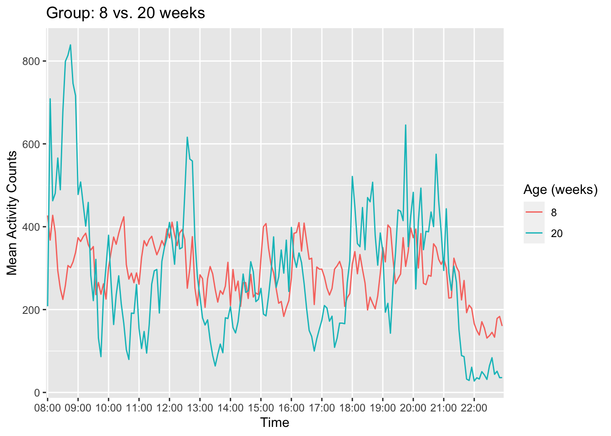
COMPARE TWO PUPPIES’ RAW MEAN ACTIVITY COUNTS FOR 1 SPECIFIC WEEK GROUP AVG OF RAW (MEAN) ACTIVITY COUNTS FOR 1 INDIVIDUAL WEEK 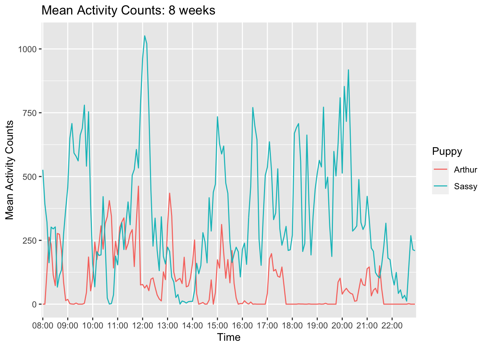 GRAPHS OF ALL WEEKS OVERLAID (USING ENTIRE GROUP RAW MEAN ACTIVITY COUNTS) GRAPHS OF GROUP: 8 VS 20 WEEKS (RAW MEAN ACTIVITY COUNTS) 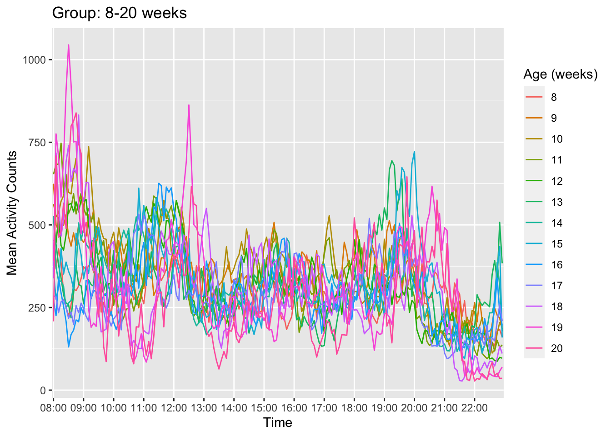 GRAPHS OF GROUP: 8, 14, & 20 WEEKS 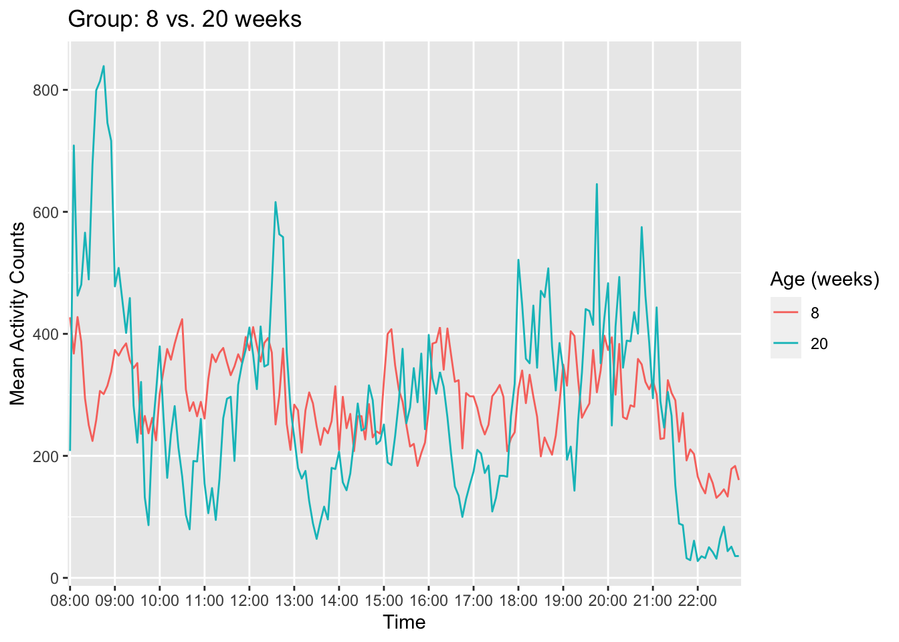
| #CALCULATE SLEEP BOUTS |
|---|
| Rest/wake thresholds |
| Intervals of resting and wakefulness |
## Note: method with signature 'Period#ANY' chosen for function '-', ## target signature 'Period#Period'. ## "ANY#Period" would also be valid |
## `summarise()` has grouped output by 'name', 'weeksold'. You can override using the `.groups` argument. |
## `summarise()` has grouped output by 'weeksold'. You can override using the `.groups` argument. |
| Calculate rest/wake duration (avg and total) for each puppy for each week, add rearing & sex info |
## `summarise()` has grouped output by 'weeksold', 'name'. You can override using the `.groups` argument. Compare home vs. DPK pups |
## `summarise()` has grouped output by 'weeksold', 'state'. You can override using the `.groups` argument. |
| Without collapsing across days: |
## `summarise()` has grouped output by 'name', 'Date', 'weeksold'. You can override using the `.groups` argument. |
## `summarise()` has grouped output by 'weeksold', 'name', 'intervaltime'. You can override using the `.groups` argument. |
## `summarise()` has grouped output by 'weeksold', 'intervaltime'. You can override using the `.groups` argument. |
## `summarise()` has grouped output by 'weeksold'. You can override using the `.groups` argument. |
## `summarise()` has grouped output by 'weeksold', 'name'. You can override using the `.groups` argument. |
#PLOTTING REST/WAKE BOUTS
Compare average rest/wake bout durations in 1 individual week  Compare average rest/awake bout durations for each week
Compare average rest/awake bout durations for each week  Total Minutes of Rest by Week AVG REST HOME VS. DPK 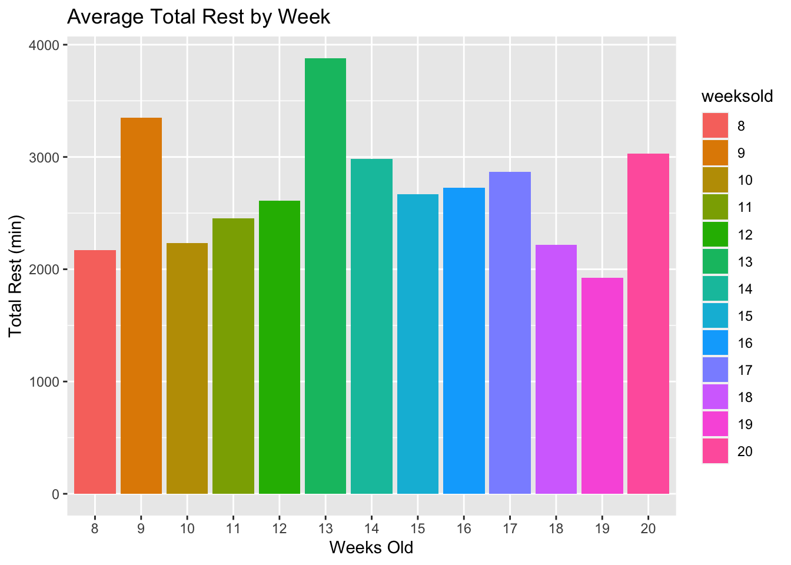
Total Minutes of Rest by Week AVG REST HOME VS. DPK 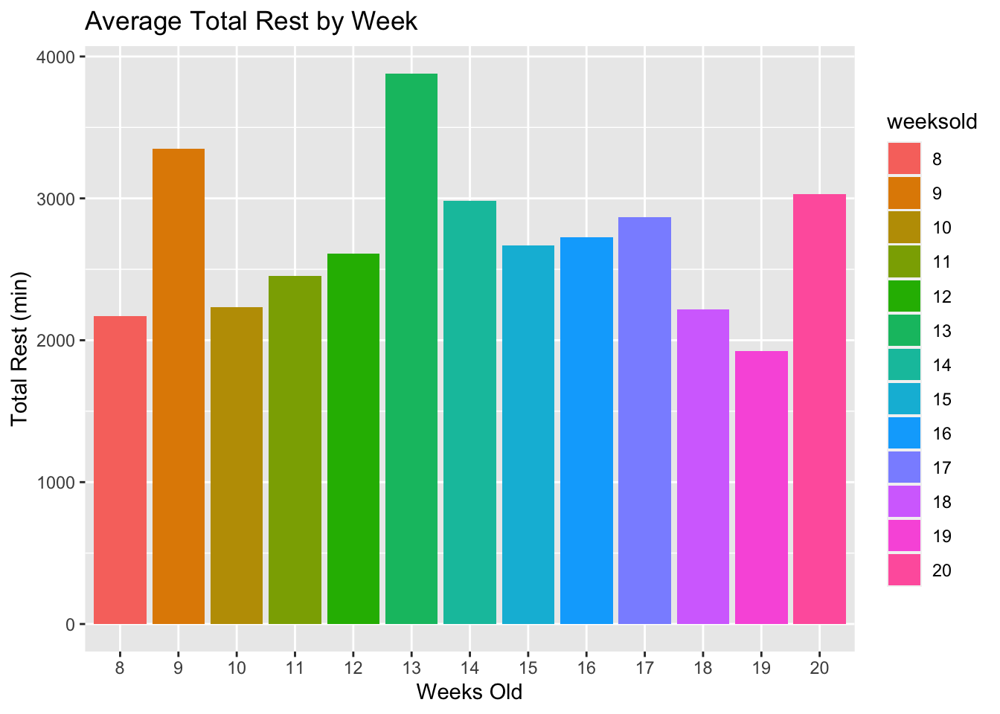
#BY PUPPY
Bar graph: Mean State Duration for 1 puppy by weeks Line graph: Mean State Duration for 1 puppy by weeks 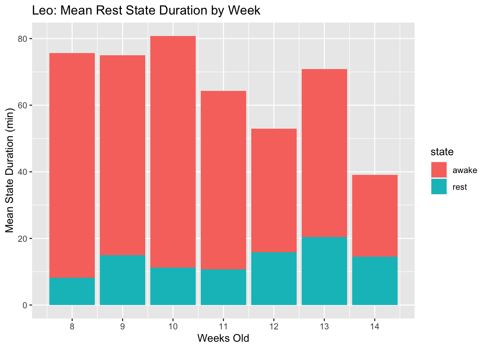 Line graph: mean rest state duration by week for each puppy
#EXPORT
EXPORT dfs individually
EXPORT dfs as sheets on one doc